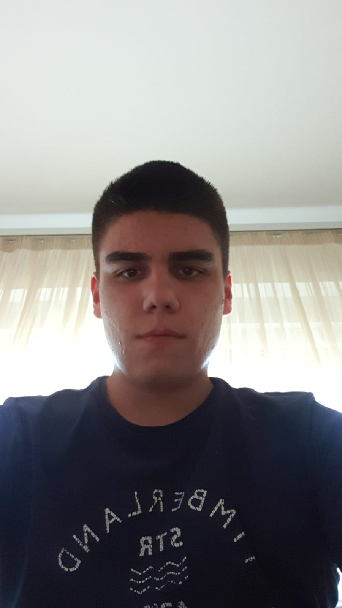

Име и презиме: Петар Штрбац
Одељење: III 3
Телефон: 021 459 170
Основно: ОШ "Свети Сава"
средње: Гимназија 20. Октобар
Бачка Паланка је градско насеље у Србији у општини Бачка Паланка у Јужнобачком округу. Према попису из
2011. било је 28239 становника.
Површина: 579km2